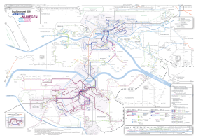
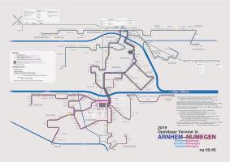
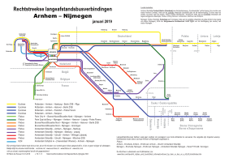

This page will be updated around March 2020. Bus services will remain largely unchanged between between 15 December 2019 and 01 March 2020. Some changes that happened during 2019:
The Burchtstraat bus stop in central Nijmegen was closed in mid 2019; all buses that served Burchtstraat now run through Waalkade
The station of Emmerich Elten opened on 1 July 2019
15 December 2019:
Brengflex no longer operates
Two new bus lines were added in Nijmegen: bus 3 between Oosterhout Dorp and Nijmegen central station via the new bridge, and bus 7 between Nijmegen central station and Afrikamuseum (largely following the route of bus 5)
Buurtbus 556 now also serves Elst train station
Arnhem–Nijmegen bus network maps
The following are network maps of local buses, late-night public transport, and long-distance buses in and around the Arnhem–Nijmegen Region in 2019. (They are deliberately not in exactly the same style; I've been trying out various things. Please contact me if you see errors of any sort: hilario.bambooradical.com and insert @gmail in front of the second dot.)
Arnhem–Nijmegen local bus network 2019 Arnhem–Nijmegen night public transport network 2019 Arnhem–Nijmegen long-distance bus network 2019